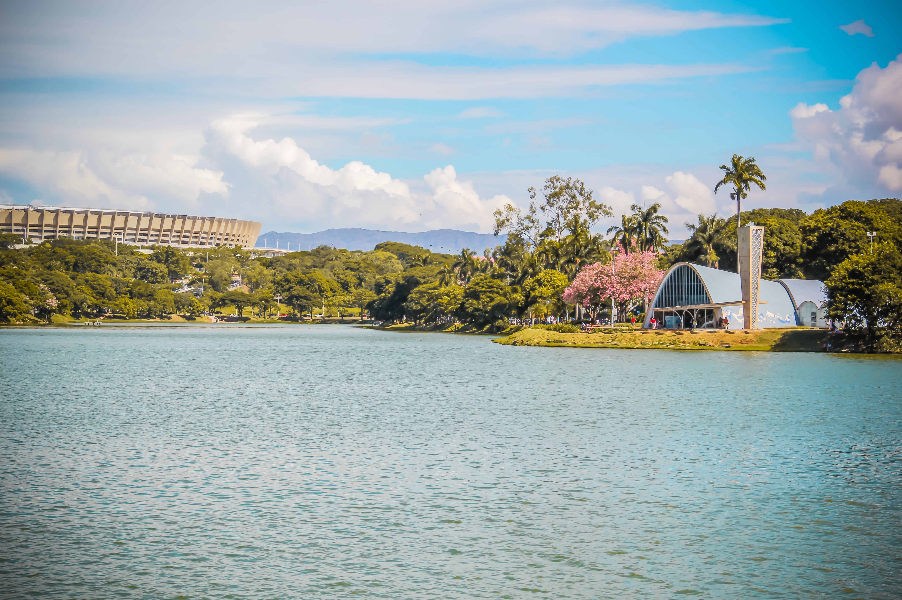
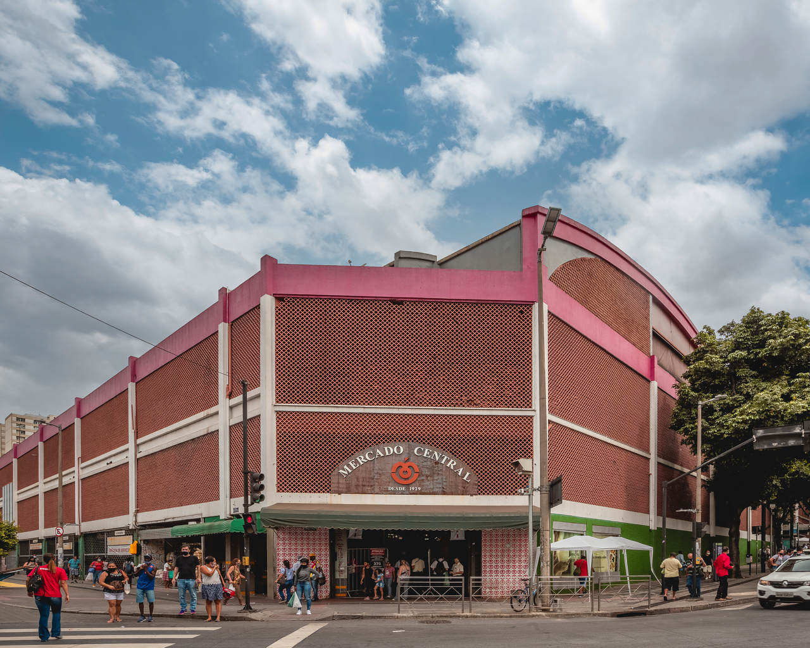
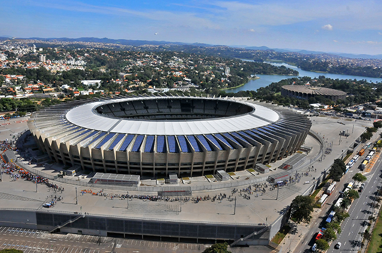
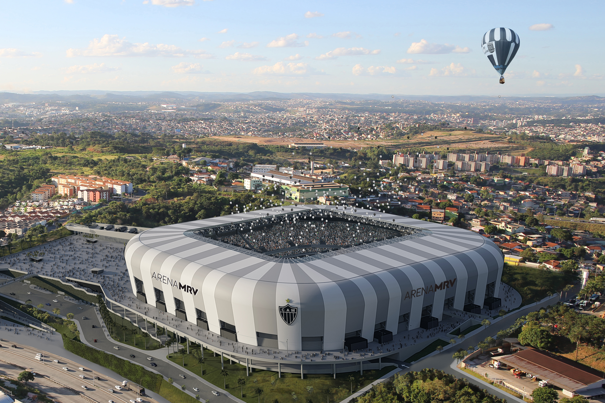

Belo Horizonte é a capital de Minas Gerais e uma das maiores cidades do Brasil. A cidade é conhecida por sua gastronomia, cultura e diversos pontos turísticos, além de ser a cidade que reside a nossa faculdade.
A Lagoa da Pampulha é um dos cartões-postais de Belo Horizonte. Cercada por paisagens bonitas e obras arquitetônicas famosas, como a Igreja de São Francisco de Assis, o local é ideal para caminhadas, passeios de bicicleta e momentos de lazer ao ar livre.
O Mineirão é um dos estádios mais importantes do Brasil e palco de grandes jogos de futebol e eventos. Inaugurado em 1965, ele recebe partidas históricas e também oferece visitas guiadas e uma vista privilegiada da Pampulha.
O Mercado Central é um dos lugares mais tradicionais da cidade. Lá é possível encontrar comidas típicas mineiras, artesanato, queijos, doces e diversos produtos regionais, sendo um ponto obrigatório para quem quer conhecer a cultura e a gastronomia de Minas Gerais.
A Arena MRV é o estádio mais moderno de Belo Horizonte e a casa do Atlético Mineiro. Inaugurada recentemente, destaca-se pela estrutura tecnológica e pela atmosfera vibrante nos dias de jogo.




Belo Horizonte é um ótimo destino para quem gosta de cultura, boa comida e belas paisagens, juntamente com o futebol mineiro.